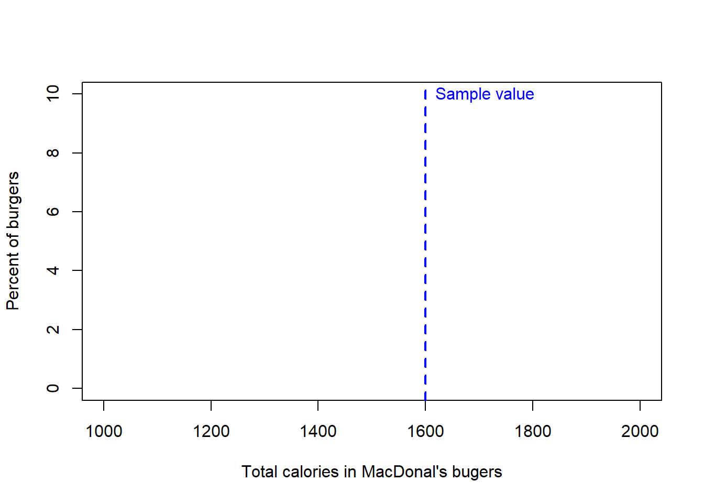
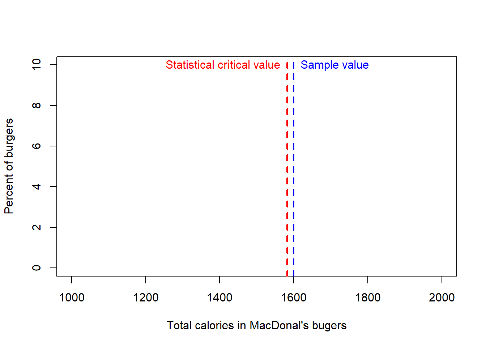
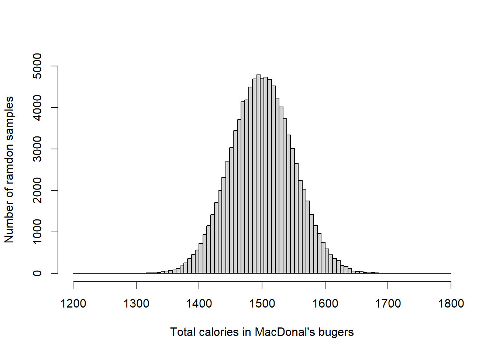
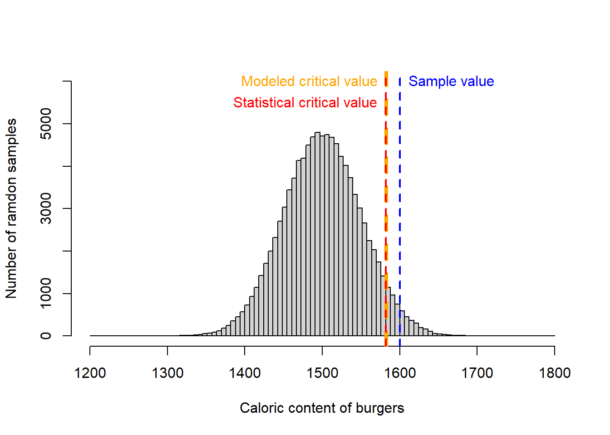

Testing a hypothesis by brutal force
In the following chapters, we will introduce standardized ways to test hypotheses comparing sample values to critical values; I want to finish this chapter by illustrating the ultimate idea behind testing a hypothesis by running a brief simulation. This simulation will aim to show the general approach of hypothesis testing.
Lets say that you work for the FDA, and you have been commissioned to provide evidence for a lawsuit case involving the calories in MacDonals burgers (this is a fictitious example).
The pending lawsuit refers to a person who suffered a heart attack after his cholesterol levels increased considerably. Prior to the heart attack, the doctor of this person recommended him that he kept a daily diet of no more than 2000 calories a day, so he satisfied his weakness for burgers eating a new type of MacDonals burger that claimed to have less than 1,500 calories (Standard deviation, SD= 50).
Let say that you collected a random sample of ten burgers and found that they have on average 1600 calories. So the question is, do the claim by this individual hold any right?
Let’s start by stating the hypotheses:
Null hypothesis, Ho: burger <= 1,500 calories.
Alternative hypothesis, H1: burger > 1,500 calories.
In this case, I specifically want to know if these burgers have less than 1500 calories as claimed by the company.
We want to test this hypothesis at an \(\alpha\), level of significance, of 0.05 or 5%.
Alright, lets start our simulation.
MeanCal = 1600 #calories in the sample of burgers
plot(1, type="n", xlab="Total calories in MacDonal's bugers", ylab="Percent of burgers", xlim=c(1000, 2000), ylim=c(0, 10)) # lets create an empty plot
#plot the sample value
abline(v=MeanCal, lwd=2, col="blue", lty=2)
#lets name the mean sample value
text(MeanCal,10,labels="Sample value",pos=4, col="blue")
Next, you can plot the critical value for an alpha of 0.05 in a population with a mean of 1500 and an standard deviation of 50.
In this case, the critical value at \(\alpha\)=0.05, is simply the cutoff at which 95% of the calories in the MacDonals burgers occurs. If we are assuming the population data is normal and has a mean of 1500 and a Standard deviation, SD, of 50, we can find out that critical value using the \(qnorm\) function in R.
CriticalVal=qnorm(0.95,1500,50) # here we want to know the cutoff at which 95% of the observations occur in a population with a mean of 1500 and an SD of 50
plot(1, type="n", xlab="Total calories in MacDonal's bugers", ylab="Percent of burgers", xlim=c(1000, 2000), ylim=c(0, 10)) # lets create an empty plot
#plot the sample value
abline(v=MeanCal, lwd=2, col="blue", lty=2)
#lets name the mean sample value
text(MeanCal,10,labels="Sample value",pos=4, col="blue")
#plot the critical value
abline(v=CriticalVal, lwd=2, col="red", lty=2)
#lets name the statistical critical value
text(CriticalVal,10,labels="Statistical critical value",pos=2, col="red")
For the comparison between the critical value and the sample value, we can already observe that the sample burgers in reality have more calories than claimed by MacDonals at a significance level, \(\alpha\), of 0.05.
Lets try the same test but building an actual population of expected burgers. For this, we take one random sample from a normal population with a mean of 1500 and an standard deviation, SD, of 50. In R, you can take any number of individuals randomly from any normally distributed population using the function \(rnorm\).
MeanPopulation=1500
SDPopulation=50
RandomSample1<- rnorm(1,MeanPopulation,SDPopulation)
RandomSample1## [1] 1508.21So one sample burger from a population with a mean of 1500 and a standard deviation, SD, of 50 is \(1508.21\).
Hmm, ok, but we only have one random sample. To be robust, we probably should take 100,000 random samples and from all of those see if the top 5% of the random samples, our critical threshold, is larger or smaller than our observed sample value.
To run such a simulation, we can use the for loop function in R. Lets try. Let me explain that function with the example.
population= c() #we create an empty vector where we will store the random averages of our 1000 random samples of ten burgers
for (sampleI in 1:100000) { # here I set a variable called sampleI that will loop from 1 to 1000
meanRandomSampleI<- rnorm(1,MeanPopulation,SDPopulation) #take a random value
#lets place the value for that sample in the vector
population=c(population, meanRandomSampleI ) #basically I am appending the value of every sample in every loop to the vector
}
# the code between {} will run for 100,000 times. to test lest count the number of entries in the vector
length(population)## [1] 100000Ok, we just created a population of 100,000 random samples from a normal population with a mean of 1500 and an standard deviation, SD, of 50. Let’s do a histogram of that database
breaks = seq(1200, 1800, length.out = 100) #lets create a set of bins
hist(population,main=NA,xlim=c(1200, 1800),ylim=c(0, 5000),breaks = breaks, xlab = "Total calories in MacDonal's bugers",ylab = "Number of ramdon samples")
Looking good….lets draw a line for the 5% level of significance for the expected distribution. We will use the R function \(quantile\), which we used earlier, to find out the value located at the 95% percentile, which will outline the position to the right where 5% of the cases occur. Let’s call this the modeled critical value, to differentiate it from the statistical critical value we calculated earlier.
ModelledCriticalValue=quantile(population,0.95,type=1) #quantile finds the value in the population of calories located at the top 5% percentile
ModelledCriticalValue## 95%
## 1582.898Now we can compare the average calorimetric content in our actual sample of 10 burgers (sample value) to the value located at the 5% mark (i.e., the level of significance).
hist(population,main=NA,xlim=c(1200, 1800),ylim=c(0, 6000),breaks = breaks, xlab = "Caloric content of burgers",ylab = "Number of ramdon samples")
#plot the sample value
abline(v=MeanCal, lwd=2, col="blue", lty=2)
#lets use a label for it
text(MeanCal,6000,labels="Sample value",pos=4, col="blue")
#plot the 5% modeled critical value
abline(v=ModelledCriticalValue, lwd=4, col="orange", lty=2)
#lets name the critical value
text(ModelledCriticalValue,6000,labels="Modeled critical value",pos=2, col="orange")
#plot the 5% statistical critical value
abline(v=CriticalVal, lwd=2, col="red", lty=2)
#lets name the mean sample value
text(CriticalVal,5500,labels="Statistical critical value",pos=2, col="red")
Pretty neat, ah?. the modeled and statistical critical value were identical. And they both were below the sample value. In short, the sample of ten burgers (Blue line in figure above) was much larger than the critical value at 5% (red lines), we then reject the null hypothesis that these burgers have less than 1,500 calories, and would have to embrace the alternative hypothesis that the burgers have more than 1500 calories. You can surmise in your report to the judge that the one guy lawsuiting MacDonals was deceived. A potential case of false advertisement.